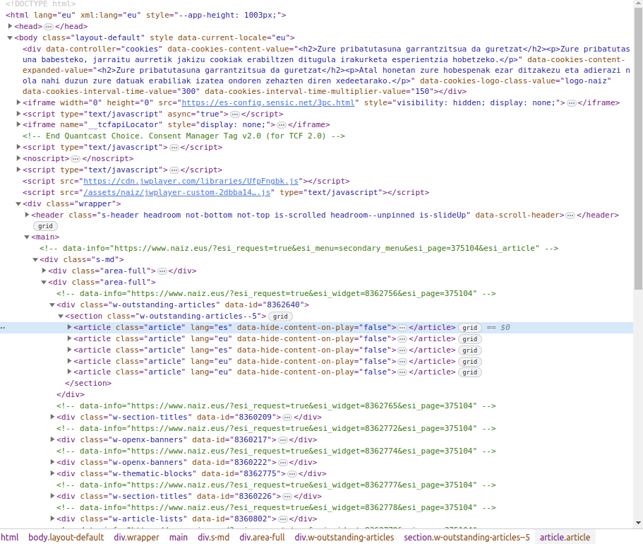
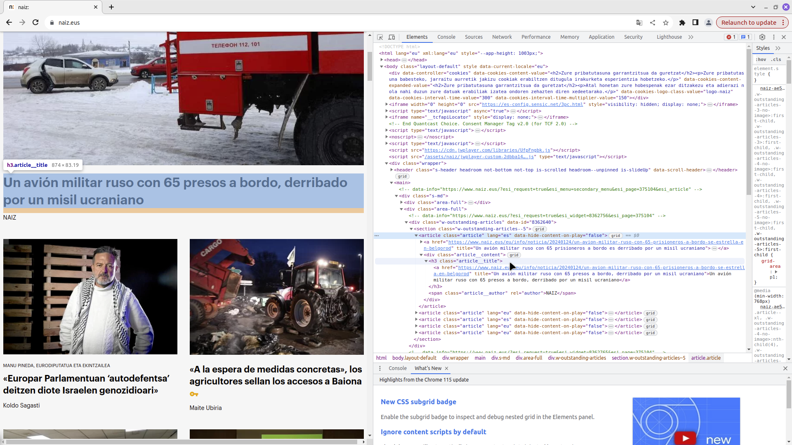

The first thing we have to know is that the web sraping is a automatization of the webpages publiclky avaible information. There is a several legislations about this tecnique, like the GDPR in Europe, in wich is delimeted for the Personal data or Personally Identifiablke Information (PII). So, we have to avoid the problematic question of the scraping personal data of european citizens and if we have to do it, follow the legals questions regarded in the GDPR.
Apart from the legal cuestion, it is impiortant to know that webscraping is technique that relantizes the servers of the companies if we do it very agressivly. Is for this that we have to priorice the APIs (Aplication Programminf Interface) avaiable for the webpages if there are. This aplications are prepared to dowload the information and don’t disturb the normal function of the servers of the webpages.
Knowing this information, we can start with the first of the 4 packages to webscraping information in R: Rvest.
First steps
The rvest package have his own website and is avaiable the full documentation in the CRAN repository. Is a very easy package to use and to deal with, in wich the principal focus is in the html structure and there csss, tags or Xpaths between others. Lets try to do this easy tutorial with a naiz.eus webpage and the news that are avaiable.
1 - Install and load the library
Like always, we need install the pacakge.
install.packages("rvest")
The following package(s) will be installed:
- rvest [1.0.3]
These packages will be installed into "~/MEGAsync/Proyectos/Blog_1/renv/library/R-4.1/x86_64-pc-linux-gnu".
# Installing packages --------------------------------------------------------
- Installing rvest ... OK [linked from cache]
Successfully installed 1 package in 8 milliseconds.
Once the package is installed, we need “call” the package to use their functions.
library(rvest)library(tidyverse)
2 - Read the page
First of all we need to read the page in pur local machine, is for this that we need to use read_html() function to save the html structure in the variable.
Like we see, we have the newspaper html structure in our variable. Once this is donne, we need to extract the css responsabile for the titles of the newspaper. For this task we can do it manually, clicking in the right button on the mouse and selecting the “inspect” option we can find manually the common css for all the titles of the articles.
 We can see that the common class or css por the articles is article, but if we move the mouse on the articles, we will see that the css us for all the article, no only the title. This way we need to split the article class to see how it the article divided in different classes to see what css is the correct one. We will see something like this image, in wich each article is separated in different css
 Like we see, the css “article__title” is our appropiate css we need to use to extract the title of the article.
Other way to do this more easy, is to install add ons we can use for this task (I use SelectorHub for Firefox and Selectorgadget for chrome navigator). This way we can select easier the css we want to dowload. In our case is
4 - Extract the css information
First of all we have to ensure that our css is apropuiate. For this lets try first to extract the first title. For this, first we have to stablish the csss like a node in wich we want extract and then extract the text of the node we determinate.
[1] "\n Migrazio Legearen hainbat neurri atzera bota ditu Kontseilu Konstituzionalak\n \n "
We can access to the “childs” of the css this way.
Now, we want all the titles toguether in one variable. Lets try to find trought the SelectorGadget in google chrome. For this goal we need to find apropiate css selecting with the add on. Once we see all the titles selected, we can try if all is correct with the selected css.
[1] "Migrazio Legearen hainbat neurri atzera bota ditu Kontseilu Konstituzionalak"
[2] "Nafarroa reitera que a la empresa de Artaxoa no se enviaban lodos desde Zubieta, sino líquidos"
[3] "TJUE: el plazo para reclamar los gastos hipotecarios empieza cuando el cliente conoce el fraude"
[4] "Williams anaien kondairaren azken pasartea, Hollywoodeko gidoi baterako aproposa"
[5] "‘Hijas del fuego’, una miniserie sobre la caza de brujas en Zugarramurdi"
[6] "\n La Diputación de Bizkaia contradice a Urkullu: los dos años son para ver cómo será el museo\n \n"
[7] "\n EH Bildu alcanza con PSE y PNV un pacto presupuestario en Gasteiz por 6 millones de euros\n \n"
[8] "\n Joseba Diez hautagai gisa babestu dute EAJren afiliatuek, zuzendaritzak proposatu ez bazuen ere\n \n"
[9] "\n Solo el PP no quiere dar pasos hacia la declaración de Donostia como ciudad tensionada\n \n"
[10] "Proyecto BCC en Gros-Ulía, ¿capricho o cabezonería de los cocineros estrellas?"
[11] "\n PNV y PSE impiden debatir una moción de urgencia sobre la tala de árboles en Gros\n \n"
[12] "\n Más de 96.000 personas están en riesgo de pobreza en Nafarroa, casi una de cada seis\n \n"
[13] "\n Denuncian un «trato indigno» hacia personas sin hogar en las Urgencias Sociales de Bilbo\n \n"
[14] "\n Lanik gabe dauden gazteen %72k 2024an lana aurkituko duela uste du\n \n"
[15] "\n Fallece una persona en un choque frontal cerca del alto de Gaintxurizketa\n \n"
[16] "\n Aniztasuna\n \n"
[17] "\n La fiscal mantiene la petición de casi quince años para los acusados por la paliza de Zornotza\n \n"
[18] "\n «Instituzioen logika XX. mendekoa da: bidea egin baino gehiago, bidea urratu egin behar da»\n \n"
[19] "\n Astigarraga eta Hernanik bisitariei zuzendutako mezua: «Ez da sagardoa, zu zara. Hartu ardura!»\n \n"
[20] "\n Gorrotxategi se postula a las primarias en Podemos sin acuerdo aún con el resto de fuerzas\n \n"
[21] "\n Esparza dice que la adjudicación de Belate «apesta» y el Gobierno defiende su legalidad\n \n"
[22] "\n La FNSEA reclama una moratoria en la prohibición de usar pesticidas\n \n"
[23] "\n Los bomberos de Donostia acuden al Pleno para denunciar que no han mejorado sus condiciones\n \n"
[24] "\n LAB denuncia la escasez de uniformes, sábanas y mantas en el hospital de Basurto\n \n"
[25] "\n Sindicatos se concentran en Gasteiz para pedir que se cumplan las medidas de salud laboral\n \n"
[26] "\n Gazako biztanleriaren erdia baino gehiago Rafahn pilatuta dago, NBEren arabera\n \n"
[27] "Gaza: encendamos la luz de la solidaridad"
[28] "\n Migrazio legearen alde bozkatu zuten hautetsien argazkiekin afitxak jarri ditu Bizi!k\n \n"
[29] "\n El juez no descarta el «ánimo homicida» en la causa de Tsunami para evitar la Ley de Amnistía\n \n"
[30] "\n Las milicias iraquíes proiraníes instan a extender sus ataques al Mediterráneo\n \n"
[31] "\n El BCE mantiene los tipos de interés en el 4,5% por tercera vez consecutiva\n \n"
[32] "\n Las lentejas, el tocino y la velocidad\n \n"
[33] "\n Un niño sordo escucha por primera vez tras un innovador tratamiento génico en EEUU\n \n"
[34] "\n Elurra bezain zuria: ezohiko pinguino bat Antartikan\n \n"
[35] "\n Los hermanos Williams llegan a tiempo y desatan la locura en San Mamés (4-2)\n \n"
[36] "\n La AN propone juzgar a Luis Rubiales por el beso «no consentido» a Jenni Hermoso\n \n"
[37] "\n La Real confirma la cesión del lateral Javi Galán, procedente del Atlético\n \n"
[38] "\n Nicolás Alustiza, ilusionado tras sus primeros días como ciclista profesional con el Euskaltel\n \n"
[39] "\n ‘Euskararen baloia’ ekimenaren edizio berriari hasiera eman dio Eibarrek\n \n"
[40] "\n Kilian Jornetek eta Zach Millerrek eliteko korrikalariei eskatu diete UTMB-i boikota egitea\n \n"
[41] "\n Jordan Theodore, tardío regalo navideño que viene para que Baskonia sea mejor equipo\n \n"
[42] "\n Bilbao Basket ya sabe lo que es perder en Europa y lía un tanto su pase a cuartos (82-80)\n \n"
[43] "\n «Lokalean bertsioekin jolasean hasi eta disko bat osatzeko erronka bete dugu»\n \n"
[44] "dFeria cumple 30 años con Italia como país invitado, bajo el lema ‘Utopía’"
[45] "\n Musika Bulegoa: «2023a urte ona izan da zuzeneko musikarentzat»\n \n"
[46] "\n ‘Ama’ diskoa aurkeztu du Tenpora taldeak, sei abesti berriz osatutako lana\n \n"
[47] "Isabel Azkaratek artearekin eta sortzaileekin duen harremanaren lekuko da San Telmo"
[48] "Atzar Hadi! ikuskizuna Oialume Biltokian"
[49] "Jon Gurrutxaga Marruma Kulturaletan"
[50] "Letagin eta Nevadah indarrak batuz Ondarrun"
[51] "Lausoka Txantreako Akelarre elkartean"
[52] "Musikagaz Fest! jaialdiaren bigarren edizioa egingo dute Zornotzan"
[53] "\n «Erresilientzia ez da presioa jasatea soilik, baizik eta esperientzietatik indartuta ateratzea»\n \n"
[54] "\n Getariatik mundura: Cristobal Balenciaga\n \n"
[55] "\n «Beldur naiz, akordio zabalen alde, abertzaletasuna alboratzen ari ez ote garen»\n \n"
[56] "\n Kaiman uharteak; finantzak, hondartzak eta askoz gehiago\n \n"
[57] "\n Zetaren Bideko hirietan zehar\n \n"
[58] "\n Urederra, harribitxi urdin turkesa, Urbasa mendilerroan\n \n"
[59] "\n «Lokalean bertsioekin jolasean hasi eta disko bat osatzeko erronka bete dugu»\n \n"
Now we can use one of multiples packages avaible to clean the text, but to do it simple, we can do it ease witn the function gsub()
[1] "Migrazio Legearen hainbat neurri atzera bota ditu Kontseilu Konstituzionalak"
[2] "Nafarroa reitera que a la empresa de Artaxoa no se enviaban lodos desde Zubieta, sino líquidos"
[3] "TJUE: el plazo para reclamar los gastos hipotecarios empieza cuando el cliente conoce el fraude"
[4] "Williams anaien kondairaren azken pasartea, Hollywoodeko gidoi baterako aproposa"
[5] "‘Hijas del fuego’, una miniserie sobre la caza de brujas en Zugarramurdi"
[6] "La Diputación de Bizkaia contradice a Urkullu: los dos años son para ver cómo será el museo"
[7] "EH Bildu alcanza con PSE y PNV un pacto presupuestario en Gasteiz por 6 millones de euros"
[8] "Joseba Diez hautagai gisa babestu dute EAJren afiliatuek, zuzendaritzak proposatu ez bazuen ere"
[9] "Solo el PP no quiere dar pasos hacia la declaración de Donostia como ciudad tensionada"
[10] "Proyecto BCC en Gros-Ulía, ¿capricho o cabezonería de los cocineros estrellas?"
[11] "PNV y PSE impiden debatir una moción de urgencia sobre la tala de árboles en Gros"
[12] "Más de 96.000 personas están en riesgo de pobreza en Nafarroa, casi una de cada seis"
[13] "Denuncian un «trato indigno» hacia personas sin hogar en las Urgencias Sociales de Bilbo"
[14] "Lanik gabe dauden gazteen %72k 2024an lana aurkituko duela uste du"
[15] "Fallece una persona en un choque frontal cerca del alto de Gaintxurizketa"
[16] "Aniztasuna"
[17] "La fiscal mantiene la petición de casi quince años para los acusados por la paliza de Zornotza"
[18] "«Instituzioen logika XX. mendekoa da: bidea egin baino gehiago, bidea urratu egin behar da»"
[19] "Astigarraga eta Hernanik bisitariei zuzendutako mezua: «Ez da sagardoa, zu zara. Hartu ardura!»"
[20] "Gorrotxategi se postula a las primarias en Podemos sin acuerdo aún con el resto de fuerzas"
[21] "Esparza dice que la adjudicación de Belate «apesta» y el Gobierno defiende su legalidad"
[22] "La FNSEA reclama una moratoria en la prohibición de usar pesticidas"
[23] "Los bomberos de Donostia acuden al Pleno para denunciar que no han mejorado sus condiciones"
[24] "LAB denuncia la escasez de uniformes, sábanas y mantas en el hospital de Basurto"
[25] "Sindicatos se concentran en Gasteiz para pedir que se cumplan las medidas de salud laboral"
[26] "Gazako biztanleriaren erdia baino gehiago Rafahn pilatuta dago, NBEren arabera"
[27] "Gaza: encendamos la luz de la solidaridad"
[28] "Migrazio legearen alde bozkatu zuten hautetsien argazkiekin afitxak jarri ditu Bizi!k"
[29] "El juez no descarta el «ánimo homicida» en la causa de Tsunami para evitar la Ley de Amnistía"
[30] "Las milicias iraquíes proiraníes instan a extender sus ataques al Mediterráneo"
[31] "El BCE mantiene los tipos de interés en el 4,5% por tercera vez consecutiva"
[32] "Las lentejas, el tocino y la velocidad"
[33] "Un niño sordo escucha por primera vez tras un innovador tratamiento génico en EEUU"
[34] "Elurra bezain zuria: ezohiko pinguino bat Antartikan"
[35] "Los hermanos Williams llegan a tiempo y desatan la locura en San Mamés (4-2)"
[36] "La AN propone juzgar a Luis Rubiales por el beso «no consentido» a Jenni Hermoso"
[37] "La Real confirma la cesión del lateral Javi Galán, procedente del Atlético"
[38] "Nicolás Alustiza, ilusionado tras sus primeros días como ciclista profesional con el Euskaltel"
[39] "‘Euskararen baloia’ ekimenaren edizio berriari hasiera eman dio Eibarrek"
[40] "Kilian Jornetek eta Zach Millerrek eliteko korrikalariei eskatu diete UTMB-i boikota egitea"
[41] "Jordan Theodore, tardío regalo navideño que viene para que Baskonia sea mejor equipo"
[42] "Bilbao Basket ya sabe lo que es perder en Europa y lía un tanto su pase a cuartos (82-80)"
[43] "«Lokalean bertsioekin jolasean hasi eta disko bat osatzeko erronka bete dugu»"
[44] "dFeria cumple 30 años con Italia como país invitado, bajo el lema ‘Utopía’"
[45] "Musika Bulegoa: «2023a urte ona izan da zuzeneko musikarentzat»"
[46] "‘Ama’ diskoa aurkeztu du Tenpora taldeak, sei abesti berriz osatutako lana"
[47] "Isabel Azkaratek artearekin eta sortzaileekin duen harremanaren lekuko da San Telmo"
[48] "Atzar Hadi! ikuskizuna Oialume Biltokian"
[49] "Jon Gurrutxaga Marruma Kulturaletan"
[50] "Letagin eta Nevadah indarrak batuz Ondarrun"
[51] "Lausoka Txantreako Akelarre elkartean"
[52] "Musikagaz Fest! jaialdiaren bigarren edizioa egingo dute Zornotzan"
[53] "«Erresilientzia ez da presioa jasatea soilik, baizik eta esperientzietatik indartuta ateratzea»"
[54] "Getariatik mundura: Cristobal Balenciaga"
[55] "«Beldur naiz, akordio zabalen alde, abertzaletasuna alboratzen ari ez ote garen»"
[56] "Kaiman uharteak; finantzak, hondartzak eta askoz gehiago"
[57] "Zetaren Bideko hirietan zehar"
[58] "Urederra, harribitxi urdin turkesa, Urbasa mendilerroan"
[59] "«Lokalean bertsioekin jolasean hasi eta disko bat osatzeko erronka bete dugu»"
Now we have vector with all the titles of the newspaper of the specific day.
5 - Activities
If you are still
Try to extract all the links for each title (Tip, use htlm_attr instead and html_text(“href”))
Try to extract the author of each new, and figure out what is the problem with the lenght of the vector
Try to extract the lenguage of each new (What news are in basque and wich ones are in spanish? Do it thinking to do it automaticlly)
Try to save all the data in a data frame, each information of the new for each title
Thanks for see the article, and share it if you like it.